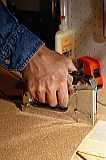

БДС 12.1.012-80 ТУК и БДС 16013-84 ТУК
Вибрационните вредности на работното място се представят обикновено в две форми: вибрации на цялото тяло (тялото се разтърсва от машина или превозно средство) или вибрации на определена част от тялото, например използване на пневматичен чук.

В тези случаи риска от увреждане зависи от честотата на вибрациите, интензивността и продължителността на действие. Вибрация с много ниска честота (по-малка от 1 вибрация за секунда) може да предизвика затруднено движение. Вибрации с ниска честота (между 1 и 80 вибрации за секунда) могат да предизвикат слабост, умора, нарушен сън, херния, увреждане на вътрешни органи и др.
Вибрациите се измерват с уреди подобни на шумомерите. Сензор се прикрепя към мястото на измерване на вибрациите, свързан с измервателен уред, отчитащ различните честоти в м/сек. Някои измервателни уреди мерят интензивността в целия диапазон от честоти и дават отчитане, което може да се сравнява с регламентираните нива.
СЪЩЕСТЛУВАТ ТРИ НАЧИНА ЗА НАМАЛЯВАНЕ НА ИЗЛАГАНЕТО НА ВИБРАЦИИ
- да се избягват вибрациите изобщо;
- да се изолират работниците от тях;
- намаляване на времето през което работниците са подложени на действието на вибрации.
Предотвратяването на вибрациите се постига чрез:
- подобряване на окачването на камионите;
- подобряване на пътищата;
- усъвършенстване на двигателите.
| ДНЕВНА ДОЗА | НЕОБХОДИМИ ДЕЙСТВИЯ |
|---|---|
0,25 м/сек2 |
Рисковете да бъдат намалени до поносимо ниво. Да се информират работниците за риска. |
| 0,5 м/сек2 | Работодателите да съставят програма за контрол. Информация и подготовка на работниците. Оценка на вибрациите и измервания. Да се прегледат работниците. Работниците да получат резултатите от измерванията. |
| 0,7 м/сек2 | Системни здравни прегледи. Ако вибрациите не могат да се намалят, то да се контролира времето на излагане. |
| 1,25 м/сек2 | Да се обявят дейностите пред съответните отговорни инстанции. |
КЪМ МЕНЮТО ТУК